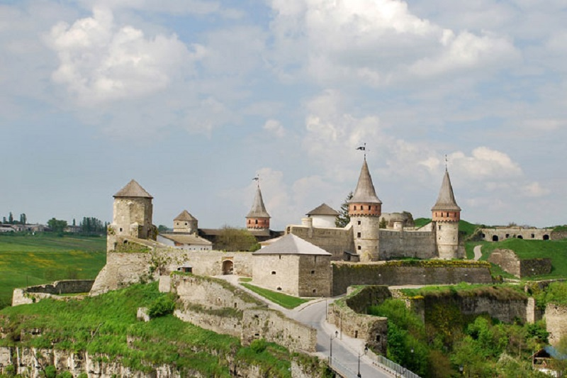

Фото виставка кращі роботи

Заповідник «Кам'янець»
Національний історико-архітектурний заповідник «Кам'янець». Розташований в Кам'янці-Подільському Хмельницької області.

Києво-Печерська лавра
Ки́єво-Пече́рська ла́вра — київський православний монастирський комплекс. Один із найбільших християнських центрів України, визначна пам'ятка історії та архітектури. Києво-Печерська лавра належить державі, а релігійні організації користуються нею на правах оренди.

Національний дендрологічний парк «Софіївка»
Націона́льний дендрологі́чний парк «Софі́ївка», або Софіївський парк, — шедевр світового садово-паркового мистецтва кінця XVIII — початку XIX століть. Щорічно його відвідують близько 150 тисяч людей (граничнодопустима, науково обґрунтована норма відвідування — 500 тисяч на рік). Площа — 179,2 га.